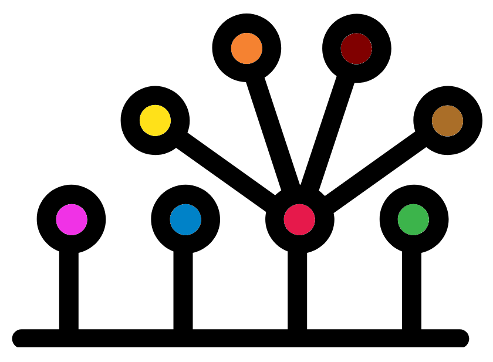
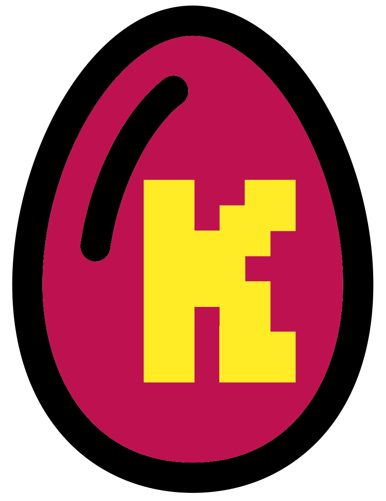

#Create EC directory
mkdir ECMinPath

MinPath can predict MetaCyc metabolic pathways. These pathway are made up of sets of enzymes that catalyse various reactions.
Ensure you start in the ~/8-Annotation directory.
EC extraction

Before we can estimate the pathways we need to extract the EC numbers predictions from the GFF file. EC (Enzyme Commission) numbers are a numerical classification for enzymes based on the reaction they catalyse.
Unless you know the EC scheme well they are generally not helpful by themselves. An example EC number is EC 3.1.1. The numbers represents the group the enzyme belongs to with the first number being the biggest group. From highest to the lowest grouping 3.1.1 represents:
- 3: Hydrolase enzymes
- 3.1: Hydrolase enzymes that act on ester bonds
- 3.1.1: Carboxylic Ester Hydrolases
With all that information we will extract the EC annotations from the GFF files. First we’ll create a directory for the output.
We will now use a loop with various parts to create EC annotation files. The input .ec files required for MinPath are tab delimited with two columns:
- Protein/sequence id. E.g. GDGAPA_12670
- EC annotation. E.g. 6.1.1.4
Note: The lack of \ at the end of most of the lines is intentional. The below is all one command over multiple lines but loops work slightly different and don’t need \ in certain parts. Ensure you press enter at the end of each line.
ls -1 */*gff3 | sed "s|.*/||" | sed "s/.gff3//" | while read bin
do
cat ${bin}/${bin}.gff3 | grep "EC:" | cut -f 9 | sed "s/ID=//" | \
sed "s/;.*EC:/\t/" | sed "s/,.*//" > EC/${bin}.ec
doneCode explanation
That is quite a bit of code. You don’t need to understand it as it should always work for Bakta output. If you are not currently interested you can skip to the MetaCyc prediction step
If you are interested check out the contents of the 2 expandable boxes below. They contain explanations and example code to break down the code.
We’ll explain the code that initialises the loop.
- First we list all our
.gfffiles on one line each (ls -1 *gff) - Next, we remove the directory name (
sed "s|.*||") - Then the suffix
.gffis substituted with nothingsed "s/.gff//"
This gives us the name of each bin (e.g. K1.1, K1.2).
#List all gff files on one (-1) each
ls -1 */*gff3
#Remove the directory name
#You can use any character as the divider in sed
#Useful when you want to move slashes from a file name
ls -1 */*gff3 | sed "s|.*/||"
#List all the file prefixes (on one line each)
ls -1 */*gff3 | sed "s|.*/||" | sed "s/.gff3//"With the above code we can loop through each file prefix and use the variable bin (arbitrarily chosen) which contains the file prefix. This is carried out with while read bin. All lines between the do (start of the loop) and done (end of loop) are lines run in the loop.
Run the loop with an echo command to show we are using the ${bin} variable to specify the input and output files.
ls -1 */*gff3 | sed "s|.*/||" | sed "s/.gff3//" | while read bin
do
echo "${bin}/${bin}.gff3 ../EC/${bin}.ec"
doneNow to look at the command within the loop:
cat ${bin}.gff3 | grep "EC:" | cut -f 9 | \
sed "s/ID=//" | sed "s/;.*;Dbxref=/,/" | \
sed "s/,.*EC:/\t/" | sed "s/,.*//" >../EC/${bin}.ecA good way to figure out what a workflow is doing, is by building it up step by step. Run the first part of workflow and then add the next section, run, repeat. This shows you how each new section is affecting the output. Additionally, it is always good to run it on one file and head the output so we have a manageable amount of data to look at.
We’ll do that with the K1.1.gff3 file.
Note: Remember we are adding head to the end for ease of viewing.
Tips:
- Use the up arrow to go back to previously run commands that you can then edit.
- Remember the
clearcommand.
#Grab every line containing "EC:"
cat K1.1/K1.1.gff3 | grep "EC:" | head#Cut out the 9th column/field (-f) (i.e. only keep the 9th column)
#This is the attributes field in GFF3
#This contains a plethora of information including the EC annotation if present
#cut uses tabs as the default column/field delimiter
cat K1.1/K1.1.gff3 | grep "EC:" | cut -f 9 | head#The gff3 attributes field starts with the ID
#We want to keep this but remove the "ID=" part
cat K1.1/K1.1.gff3 | grep "EC:" | cut -f 9 | sed "s/ID=//" | head#We don't want any of the info between the ID and the EC number
#Therefore we want to remove everything (.*) between
# the first ";" (at the end of the ID info)
# and "EC="
#We'll replace this with a \t to seprarate the ID and EC
# columns with a tab (required by MinPath)
cat K1.1/K1.1.gff3 | grep "EC:" | cut -f 9 | sed "s/ID=//" | \
sed "s/;.*EC:/\t/" | head#Finally remove all the info after the EC number
#This info will be after the last ,
cat K1.1/K1.1.gff3 | grep "EC:" | cut -f 9 | sed "s/ID=//" | \
sed "s/;.*EC:/\t/" | sed "s/,.*//" | headIn the looped command, output is written into files: > EC/${bin}.ec.
MetaCyc predictions

With our .ec files we can create our MetaCyc predictions.
First we’ll change directory into the EC directory. Then create an output directory for the MetaCyc predictions.
cd ./EC
mkdir ../MetaCycNow we can loop through the file suffixes to run MinPath.
ls -1 *ec | sed "s/.ec//" | while read bin
do
python /pub14/tea/nsc206/git_installs/Minpath/MinPath.py \
-ec ${bin}.ec \
-report ../MetaCyc/${bin}.minpath
doneA lot of output will be printed to screen but this can be ignored unless you see warnings.
MetaCyc report

First, change directory into the MetaCyc directory.
#Change directory
cd ../MetaCyc
#List contents
lsFrom the CoCoPyE results we found that bin K1.22 was very good with a quality score >98%. We will therefore have a look at its output.
Have a look at the .minpath -report file for K1.22.
less K1.22.minpathThe file contains the following columns
- Pathway ID
- Pathway reconstruction: Only available for genomes annotated in MetaCyc database
- Naive: Indicates if pathway was reconstructed by the naive mapping approach (1) or not (0)
- Minpath: Indicates if the pathway was kept (1) or removed (0) by
MinPath - Fam0: The number of families involved in the pathway
- Fam-found: Number of families in pathway that were annotated/found
- Name: Description of pathway
Quit (q) less when you are happy.
There are some quick things we can do in bash with these files.
#Count number of pathways found in each bin with word count
wc -l *minpath
#Grab every line with "PWY-6972" from every file
grep "PWY-6972" *minpath | lessKEGGs

You can also get KEGG information with MinPath.
The code:
#Change to correct directory
cd ~/8-Annotation
#Make directory for KEGGs
mkdir KEGG
#KEGG extractions
ls -1 */*gff3 | sed "s|.*/||" | sed "s/.gff3//" | while read bin
do
cat ${bin}/${bin}.gff3 | grep "KEGG:" | cut -f 9 | sed "s/ID=//" | \
sed "s/;.*KEGG:/\t/" | sed "s/,.*//" > KEGG/${bin}.kegg
done
#Make directory for KEGG minpath output
mkdir KEGG_minpath
#Change directory to KEGG
cd KEGG
#Run MinPath
ls -1 *kegg | sed "s/.kegg//" | while read bin
do
python /pub14/tea/nsc206/git_installs/Minpath/MinPath.py \
-ko ${bin}.kegg \
-report ../KEGG_minpath/${bin}.minpath
doneWith these files you can then investigate what bins have which pathways. Additionally, with more samples analysed you can determine which samples have which pathways present.
Finish

Splendid! That is the end of the workshop materials aside from the appendix in the next chapter. I hope you enjoyed it and found it useful.
There is also an appendix with further information and resources.